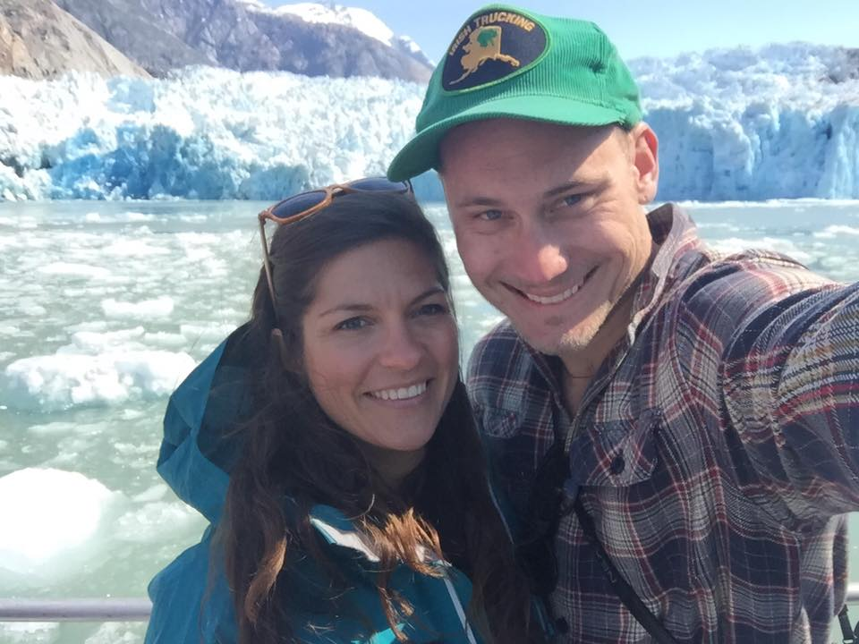

Sarah Arntson Wood
I recently moved to Oregon after living in Juneau, AK for the last ten years. My husband grew up in Bend, OR, and after one visit, it didn't take much convincing on his part for me to consider moving here. Although I miss the wildness of Alaska, I am really loving the friendliness of Oregon, and I have been busy having new adventures - Oregon-style!
I have been an Academic Advisor for the past 5 years. First, at the University of Alaska Southeast, and currently, for the College of Engineering at Oregon State University. Prior to Academic Advising I worked for the Alaska Department of Fish and Game developing internships and recruiting top-notch students nationwide.
I received a Bachelor of Arts degree of the College of Saint Benedict in 2006. I love to learn, and since completing my undergraduate, I have continued to pursue graduate work in various areas of interest. Although I have not completed a graduate degree, I have completed coursework in Public Administration, Counseling, and Education.
Although I love the interpersonal interactions and daily problem solving involved in my current career, I am excited and ready to change my career path! Through my decade of work experience I have learned that I enjoy (and have strengths in) strategic thinking, analysis, and logic. After exploring careers that would allow me to use my strengths, I discovered programming and after a few lessons on CodeAcademy I was hooked.
I am currently a student at PDX CodeGuild, learning fullstack web development. So far we have delved into Python, and are beginning our work in HTML and CSS. I am so enthralled by this new topic and amazed that after only a month, I can write working programs! My goal is to make a complete career change and become a fulltime software developer once I have completed this Bootcamp. I am counting the days to my new career!
I love anything and everything that can be done outside! In Alaska I spent most of my free time hiking, skiing, ice climmbing, taking care of my old chocolate lab, Elway, and camping on the beach. Since moving to Oregon I am finding new adventures with gardening, raising chickens, and searching for snow to ski in.
I have traveled solo to Africa and climbed Mount Kilimanjaro,, canoed for 30 days down the Yukon River, taught on the Navajo reservation in New Mexico, lived abroad in New Zealand, and had many other exciting adventures. My philosophy is that there are so many adventures waiting out there for me, if I wait around to try something, I'll never get through them all.
